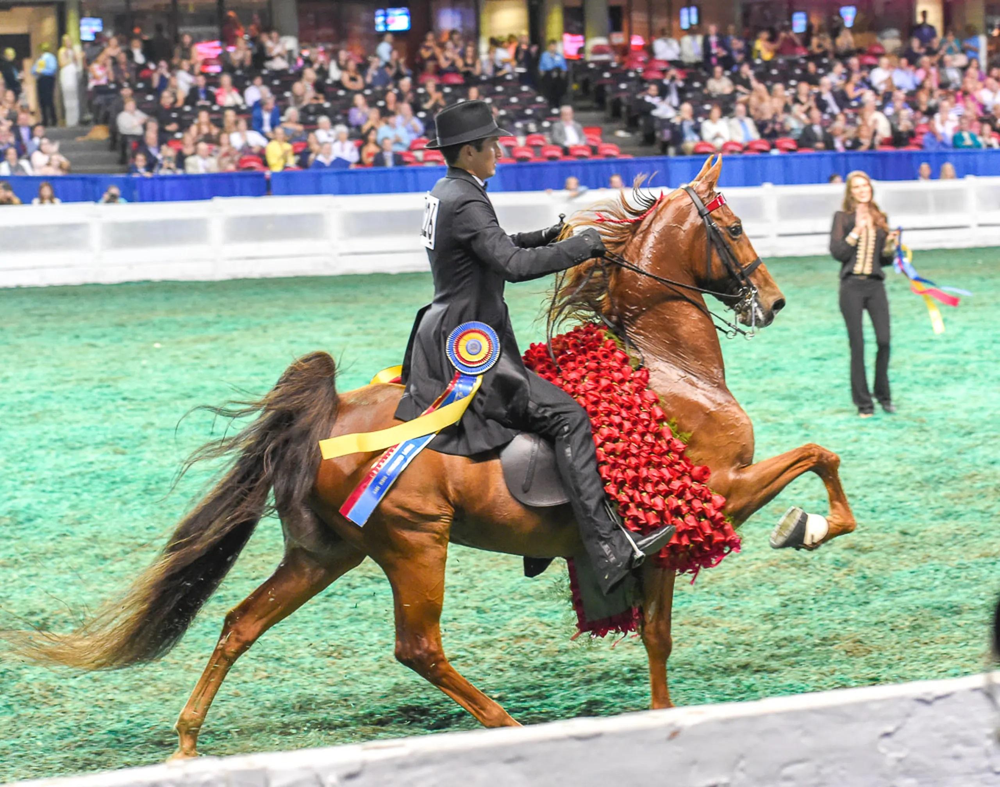
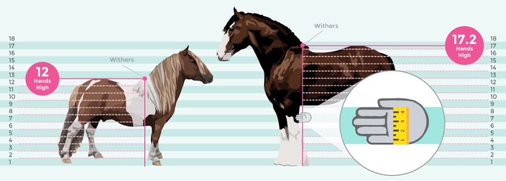
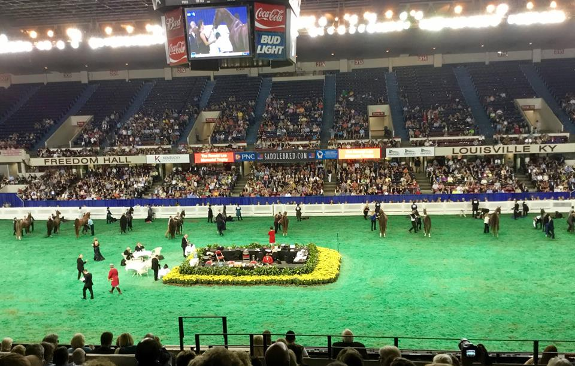

Five-Gaited horses have long, flowing manes and tails and show both ways of the ring at the walk, trot, canter, slow gait, and rack. The walk is springy and athletic. The trot is a square, bold, two-beat gait. The canter is slow, rhythmic, and must be executed on the right lead. The slow gait and rack are a four beat gait, with each foot hitting the ground seperately. It is very comfortable to ride and is performed only by the American Saddlebred.


Horses are measured in a unit called a "hand". It's origin lies in what the name implies, horses used to be measured by placing hand over hand from the ground to the withers, which is the point where the shoulder, neck, and back converge. The average width of a human hand across the palm is 4 inches, giving the "hand" it's measure. Enter your height in inches in the box below and find out how many "hands" tall you are!
Hands:

A full week of classes. Divisions spanning all the talents across American Saddlebreds, Hackney Ponies, and Road Horses. Two thousand entries form across the world. $1 million in awards. The culmination of a year of preparation. A spectacle like no other. Consider a trip to the Kentucky State Fair this August and have a look for yourself.
Breeding isn't everything, but it can certainly count for something. The graph above illustrates the top stallions at the WCHS in 2020 by virtue of their offspring's performance.